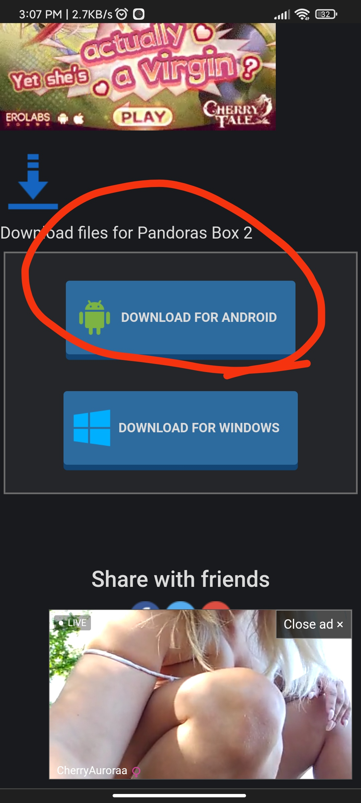

Download ပြုလုပ်နည်း
ဒီတစ်ခေါက် ပြောပြပေးသွားမှာတော့ 18+ Game webside တွေမှာ Download ပြုလုပ်ရတဲ့ နည်းလေးပဲဖြစ်ပါတယ်။
(1) ပထမဦးဆုံး Webside ထဲကိုရောက်သွားလို့ ကိုယ်လိုချင်တဲ့ Gameကိုတွေ့တဲ့အခါမှာ အဲဒီ game ကိုနှိပ်လိုက်ပါ။
အဲဒီလိုနှိပ်လိုက်တဲ့အခါမှာ ညိုကီတို့ကို သူ့ရဲ့အမှန်အကန် page ကို အရင်ဆုံးခေါ်ဆောင်သွားမှာမဟုတ်ပါဘူး ကြော်ငြာ Page တွေလို တခြား page ကိုရောက်သွားမှာပါ။
အဲလိုတခြား page ကိုရောက်သွားရင် Back နဲ့တစ်ချက်ပြန်သွားပါ။
အဲဒီအခါမှာခုဏကမူလ page ကိုပြန်ရောက်သွားမှာပါ။
ဒါပေမဲ့ ညိုကီတို့နှိပ်ခဲ့တဲ့ Game မှာ Download ဆိုတဲ့ခလုတ်ကလေးပေါ်လာခဲ့ပါပြီ။
(2) ဒုတိယအနေနဲ့ အဲဒီ Download ကိုနှိပ်လိုက်ပါ အဲဒီအခါမှာလဲ ညိုကီတို့ကို ခုဏကလိုပဲ တခြား page ကိုခေါ်သွားမှာပါ ဒီတစ်ခါလည်း back နဲ့ပြန်ထွက်ပေးရပါမယ်။
ဒီတစ်ခါမှာတော့ ပြန်ရောက်သွားတဲ့ page က ညိုကီတို့နှိပ်ခဲ့တဲ့ Game အကျဥ်းချုပ်နဲ့ Game ထဲမှာပါဝင်တဲ့ပုံတွေကိုတွေ့ရမှာဖြစ်ပြီး အောက် ဆုံးမှာ Download ခလုတ်လေးကိုတွေ့ရမှာဖြစ်ပါတယ်။
Download မှာတော့ ANDROID နဲ့ WINDOW ဆိုပြီး နှစ်မျိုးရှိမှာပါ။
ညိုကီတို့ကဖုန်းနဲ့ဆော့မှာဆို ANDROID ရွေးပြီးတော့ PC နဲ့ဆိုရင်တော့ WINDOW ရွေးလိုက်ပါ။

(3) အဲဒီလိုနှိပ်ပြီးသွားရင်တော့ ညိုကီတို့ကို New Tab တစ်ခုနဲ့ တခြား Side ထဲရောက်သွားမှာပါ။
အဲဒီအခါ ကျွန်တော်တို့ကအဲဒီ Tab ကနေထွက်ပြီး ခုနက Tab ကိုပြန်ဝင်ပြီး Download ထပ်နှိပ်ရမှာပါ။
ဒီအခါမှသာ Download လုပ်လို့ရတဲ့ Page ထဲဝင်သွားမှာပါ။
(4)အခုလို Download လုပ်တဲ့ Page ထဲ ရောက်သွားပြီဆိုရင် Download ခလုပ်လေး နှစ်ခု သို့မဟုတ် 4ခုတွေ့ရမှာပါ။
အဲဒါတွေကတော့ ဘာကွာလဲဆိုရင် ဖိုင်အရွယ်အစားနဲ့ သူတို့လိုင်းပေါ်တင်ထားတဲ့ Cloud တွေပဲကွာသွားတာပါ။
ကျွန်တော်က Mega Cloud နဲ့အဆင်ပြေလို့ M ပုံစံအနီလေးက File Size မြင့်တာလေး Down ပြတာပါ။
(5) အခုတစ်ခါမှာလည်း ညိုကီတို့ကို Cloud ကိုတန်းမခေါ်သွားပါဘူး ခုဏကလိုပဲ New Tab နဲ့တခြား Page ကိုရောက်သွားဦးမှာပါပဲ ဒါပေမယ့် အပေါ်ကလိုပဲ ခုဏကTab ကိုပြန်ဝင်တဲ့အခါ ပုံစံပြောင်းသွားတာကိုတွေ့ရမှာပါ။
ဒီတစ်ခါမှာတော့အပေါ်ဆုံးညာဘက်ထောင့်မှာ နံပါတ်လေးရေတွက်နေတာတွေ့ရပါမယ် တကယ်လို့ကြော်ငြာဖုံးနေရင်လည်း ကြော်ငြာကိုကြက်ခြေခတ်နှိပ်လိုက်ပါ။
တကယ်လို့ တခြား Tab ထဲဝင်သွားရင်လည်းပြန်ထွက်လာပြီး SKIP AD ။
ဒီတစ်ခါမှာတော့ Cloud ထဲရောက်သွားပြီဖြစ်တဲ့အတွက် Dowload ကိုနှိပ်လိုက်တာနဲ့ app ကိုစတင် Download ဆွဲပြီဖြစ်ပါတယ်။
ဒီpageထဲက တခြား အကြောင်းအရာတွေဖြစ်တဲ့ Popular တို့ဘာတို့ကိုသွားရင်လည်း Back နှိပ်ပြီးပြန်ထွက်မှ ကိုလိုချင်တဲ့ Page ကိုရောက်မှာနော်ညိုကီတို့ အဆင်ပြေကျပါစေ။